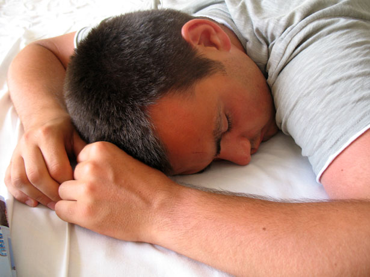

A typical week for a computer science student
Monday
Everybody hates Mondays, right? Not anymore. As a computer science student, Monday is your best friend. The first class starts at 4 pm so you can sleep in all you want (this does not mean that you should do it). Beware, though, if you want to use a table at the Student's Union, it might get crowded.
Tuesday
Tuesday is where the lectuers start kicking in for the week. This is the most difficult day of the week, whether we're talking about number of hours or content. With the lectures from 9 am until 6 pm, computer science students only have a couple of free hours in between, time that they spend either grabbing some lunch or revising for the next quiz. If you're planning on eating at the 'Uni Central', in the Student's Union building, try and have a friend go there first to catch a place; EVERYBODY goes there to eat.
Wednesday
Wednesday comes right in time to save students from a temporary burnout. As a computer science student you only have to go to lectures or labs for a maximum of three hours (sometimes it may vary). This is the perfect day to catch up with that assignment whose deadline knocks on your door. It is also the perfect time to try that delicious food your friend said he ate at the Interval. Check out the food section to see more.
Thursday
As if the whole universe conspired against you, just after you were getting used to so much free time, there comes Thursday, with classes from 11 am to 6 pm. Just pack a meal and drink lots of water and you'll be fine.
Friday
Friday, the day everybody loves, finally arrived. With only three or four hours of lectures and labs, the day is all yours. The best part of the day, though, if you're lucky, is the Quiz Night at the 'Interval'. If it happens that there's no quiz that day, you could attend a gig from the Music Player's Society jazz or blues band.
The Weekend!
 The weekend is the best opportunity to explore and take part in activities in the Student's Union. For example, on Saturday, you can join the Board Games Society and have some fun with your friends. After 9 pm, there is usually a party going on in the Foundry. You will never get bored. Also, don't forget about that assignment that's due on Monday.
The weekend is the best opportunity to explore and take part in activities in the Student's Union. For example, on Saturday, you can join the Board Games Society and have some fun with your friends. After 9 pm, there is usually a party going on in the Foundry. You will never get bored. Also, don't forget about that assignment that's due on Monday.
Find Sheffield's Student Union on social media!